Introduction
What is cAliper?¶
cAliper is cApStAn’s translation management system. cAliper has been designed to manage translation workflows in the context of large multilingual assessments and questionnaires, from the initial reception of the source materials up to the delivery of translated materials to the client. It exposes an API specifically conceived for integration with survey platforms for the purpose of file exchanges (batch releases and deliveries. It can also be used independently.
Purpose and audience¶
This guide explains how to use cAliper, cApStAn's translation management system (TMS), to prepare and manage translation workflows. It is intended primarily for National Project Managers (NPMs), with additional instructions for tasks that can only be performed by a Program Administrator (PA), also referred to as a superuser (SU).
The guide covers the management of jobs, language assets, users, workflow types, workflows, project information and version history. It also explains the parts of the OmegaT process that an NPM needs to coordinate. It is not an OmegaT user manual: linguists and other language-task users should consult the separate OmegaT guides for instructions on working in the editor.
End users¶
cAliper has two main administrative users:
- Program Administrator (PA / SU): has program-wide administrative responsibilities. The PA manages workflow types and defines the user roles and scopes available in the system. The PA can view workflows for all locales and may perform any of the actions that NPM can do.
- National Project Manager (NPM): manages the translation work for their country or region. The NPM can prepare language assets, add users within the roles and scopes defined by the PA, create and monitor workflows, and perform permitted workflow transitions. The NPM sees only the locales within their country or region.
In this guide, Program Administrator, Administrator and Project Coordinator refer to the PA role. Project Manager refers to the NPM role.
Key concepts¶
| Term | Meaning |
|---|---|
| Job | A batch received by cAliper (e.g. submitted by a survey platform or a user) and made available for workflow creation. |
| Batch | A set of files that belong together and are processed as a whole. |
| Locale | A specific language variant, such as French (Belgium), i.e. fr-BE. |
| Workflow | The sequence of steps used to process one locale of a job/batch. Each workflow corresponds to a locale+combination. |
| Workflow type | A reusable template that defines the steps in a workflow and other properties. |
| Project | The translation project hosted in the version-control server and made available to users for their assigned language task. |
| Language asset | A resource used to support language tasks, such as a translation memory (TM) or bilingual glossary. |
| OmegaT | The CAT tool used for language tasks configured as OmegaT steps. |
Overall process¶
- The survey platform submits a batch to cAliper, as well as the list of expected locales. The batch becomes a queued job.
- The NPM opens the job and creates a workflow for that batch and for each requested locale, selecting a workflow type and confirming the language assets.
- Users perform the tasks assigned to them. For steps configured for OmegaT, the assigned user authenticates, downloads the project and works in OmegaT.
- When an OmegaT user finalises their task, cAliper saves the work, commits the target files and advances the workflow to the next step.
- When the workflow reaches its final step, cAliper notifies the survey platform that the target-language batch is ready to be collected.
Program preparation¶
Before creating workflows, the PA and NPM should make sure that the necessary resources are available. Workflow-type administration, including steps and roles, is a PA responsibility, whereas language assets can be managed by both the PA and the NPM.
Tasks reserved for the PA are marked with a lock:
Workflow types¶
A workflow type can be thought of as a template containing certain workflow properties, including the sequence of steps, that all workflows of that type will have and will be used to process a batch for every locale in a job. The PA creates and maintains workflow types for the program, whereas NPMs select one of them when creating workflows for a specific job.
Info
The PA should configure workflow types to match the tasks required in the program. The workflow types used here, e.g. as SINGLE-TRANSLATION and TRA-REV-VER-REF, are examples of workflow types that could have been created by the PA.
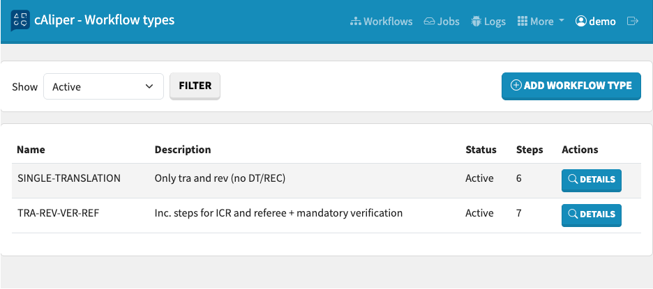
The image above shows two workflow types created by the PA with descriptive names SINGLE-TRANSLATION and TRA-REV-VER-REF.
Fixed and configurable steps¶
Every workflow type includes three fixed system-defined steps, which cannot be removed or moved to a different position:
- INIT — the initial step, before the workflow has started
- setup — the step immediately after
INIT - DONE — the final step, after the workflow has been finalized
The PA can add, remove and reorder the steps between setup and DONE.
For each configurable step, the PA can:
- define the step name
- decide its position in the sequence
- mark it as required
- indicate whether it is an OmegaT step
- activate or deactivate it
A step marked required cannot be skipped manually by the NPM in the TMS. It must be completed in OmegaT (or moved by the PA if needed).
The OmegaT option must be checked for every step that represents a language task (to be performed in OmegaT). This may include tasks like translation (where the target version must be produced) or review, verification, adjudication and the like (where the target version may be edited). Steps that are administrative and do not involve an OmegaT task should not be marked as OmegaT steps.
Warning
The exact field names in the workflow type creation form may vary with the current interface.

The image above shows a workflow type including four language tasks, one of which is required: translation, review, verification (required) and adjudication.
Managing workflow types ¶
To create or maintain a workflow type:
- Open the workflow type module.
- Select Add workflow type to create a new template, or open an existing type clicking on Details.
- Define the workflow type's identifying information and status.
- Configure the steps between the fixed
setupandDONEsteps, adding, removing or sorting them as suitable. - For each language task step, select OmegaT.
- Mark required if you do not want the NPM to be able to skip the step manually.
- Save the workflow type and ensure that it is active if it should be available to NPMs for new workflows.
User roles¶
The user list displays the users configured in cAliper, including their username as well as their scope, step and locale restrictions. The scope determines what level a user has access to (the whole program, a specific country, or specific locales) whereas the step and locale restrictions specify what projects users will be assigned to.
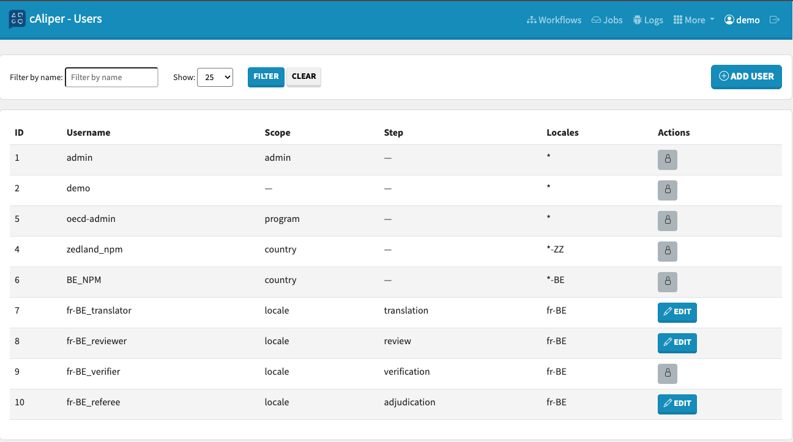
Example
If the PA created role reviser for step "revision" in a certain workflow type, when the NPM creates a workflow for locale qpm-IS based on that workflow type, that workflow will have user qpm-IS_reviser assigned to step "revision".
The PA defines roles and assigns them to the steps of a workflow type. When a NPM creates workflows, specific users for that workflow are created based on the roles pre-defined by the PA. Users created for a specific workflow will have access to that workflow (i.e. to the batch in that locale) but not to other workflows. On the other hand, the NPM can add other existing users to a workflow if needed.
In a nutshell, the PA defines roles and roles become users when NPM creates workflows.
Language assets¶
Language assets include:
- Translation memories (TMs): contain validated translations that can be reused during translation, e.g. from previous cycles of a program.
- Bilingual glossaries: contain validated terminology and phraseology, e.g. terms or expressions that must be translated a certain way.
- Translation and adaptation (T&A) notes: contain instructions and information that help the linguists deal with a certain difficulty or comply with certain requirements.
Managing language assets¶
Click on Add asset to add a resource.
Existing assets can be edited or deleted from the list.

The asset list shows each asset's file name, type, language, program, tags and available actions.
Info
Language assets must be prepared before creating workflows. When creating a workflow, cAliper will suggests language assets that match the workflow properties, based on the assets available in the system.
The NPM must review the suggestions for each locale, and change the selection as suitable, adding new assets or clearing suggested ones if not appropriate.
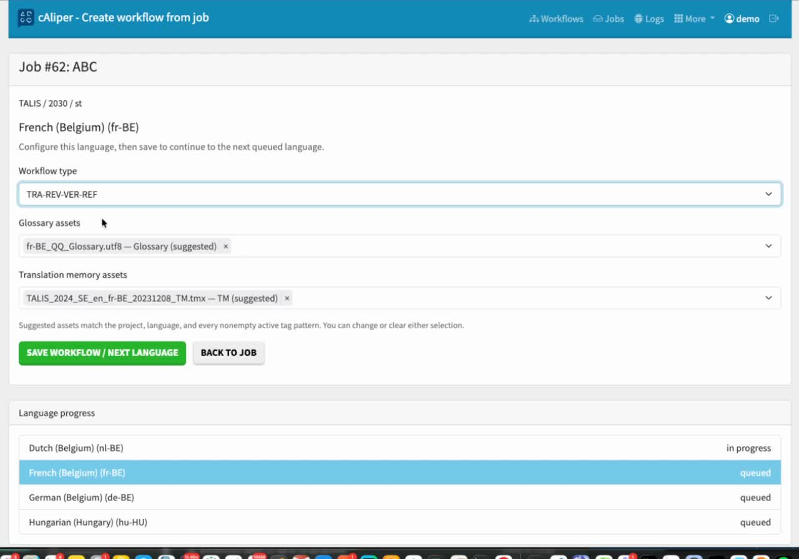
NPM responsibility
It is the NPM's responsibility to check the suggested assets for every locale before saving the new workflow. It should not be assumed that the suggested assets will always be appropriate for every locale in a job.
Jobs¶
Translation requests from users or clients are organized in "jobs". This section of the guide discusses jobs.
Understanding jobs¶
When a batch is released by the survey platform, it is sent to cAliper with the list of expected target locales and associated information. cAliper registers it as a job with a status indicating that it is available for processing.
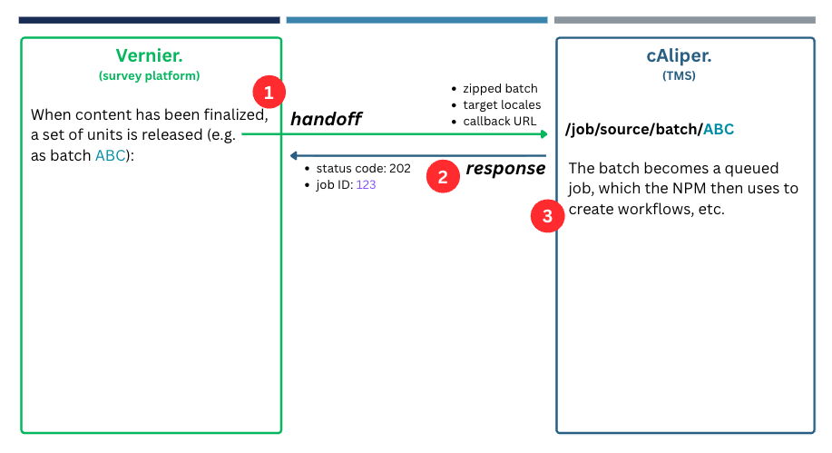
The batch may also be uploaded by a cAliper user (e.g. the PA).
The list of incoming jobs provides an overview of the jobs and provides information such as the job ID, external ID, request date, program, batch, number of locales, status and available actions.
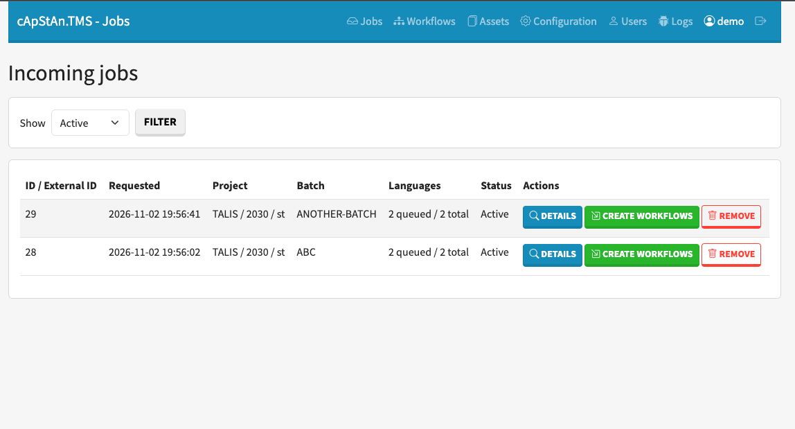
The Create workflows button is active before creating workflows for a job.
Viewing job details¶
Click on Details to inspect a job before creating its workflows. The job details include identifying information such as the program, batch, callback URL and status. The locale list shows each target language and its current state; the files section lists the files included in the batch.
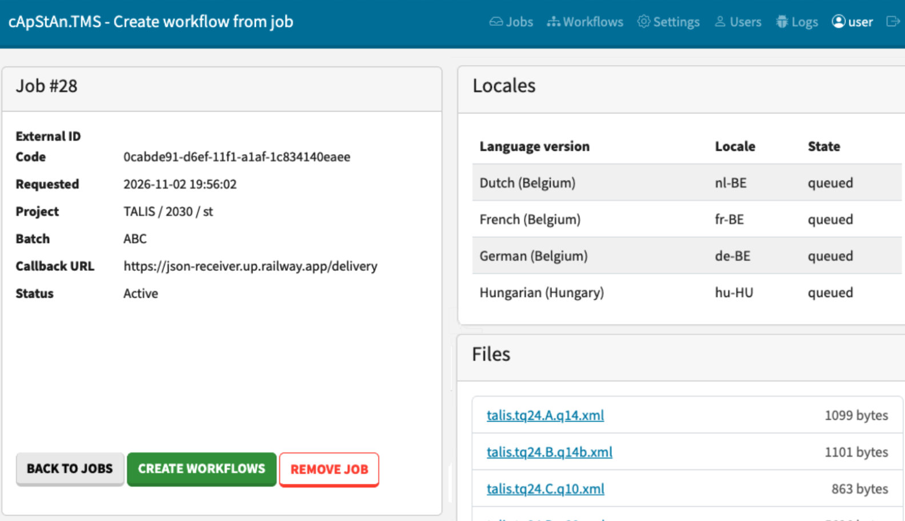
NPM
Check the job details to confirm that you are working on the intended batch and to see which locales remain queued.
Creating workflows¶
To create workflows for a job, click on the Create workflows button.
Workflows¶
A new job means that the client or the user has requested the translation of a batch into a number of target languages (or locales). To process the batch in each locale, a workflow must be created for that locale. A workflow is, therefore, the mechanism to manage and monitor each of the translations of a given batch or job. This section discusses workflows.
Creating workflows¶
The NPM processes the locales in a job one by one. A separate workflow must be created explicitly for each locale. This allows the NPM to confirm or customise the language assets for that particular project.
The NPM may skip a locale and move to the next queued locale. If a locale is skipped in this workflow creation sequence, a workflow is not created for that locale. The NPM may return to it later if it needs to be processed.
To start, select Create workflows for the queued job to be processed, or open the job details and select Create workflows there.
Configure each workflow¶
For each queued locale:
- Make sure the locale displayed is the intended target language.
- Select the appropriate workflow type.
- Review the suggested language assets (glossaries, TMs, notes), if any, and remove them or add more as needed.
- Select Save workflow / Next language to save the workflow for this locale and continue to the next queued locale.
Repeat the sequence above until all locales that should be processed have a workflow and appear "in progress". When no queued locales remain, cAliper will indicate that there are no "queued" locales left for the job. The progress area shows the state of the locales processed so far.
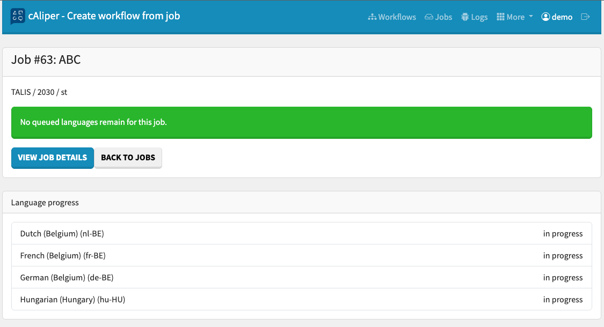
The progress area on the right-hand side shows the state of the locales processed so far.
Important
Creating a workflow for one locale does not create workflows for the other locales in the same job. Check the progress list to ensure that every locale requiring work has been handled.
Workflow management¶
The Workflows view displays the list of workflows, which allows the PA or NPM to keep track of the progress of each locale for each batch.
Workflow list and filters¶
Info
The PA can view all locales. The NPM sees only the locales belonging to their country or region.
Open the Workflows section to monitor the workflows available within your scope. The list can be filtered by fields such as program, batch, locale, workflow type, or current step. You can also select how many rows to display before applying the filters.
For each workflow, the list of workflows shows the workflow ID, program, batch, locale, workflow type, current step and available actions.
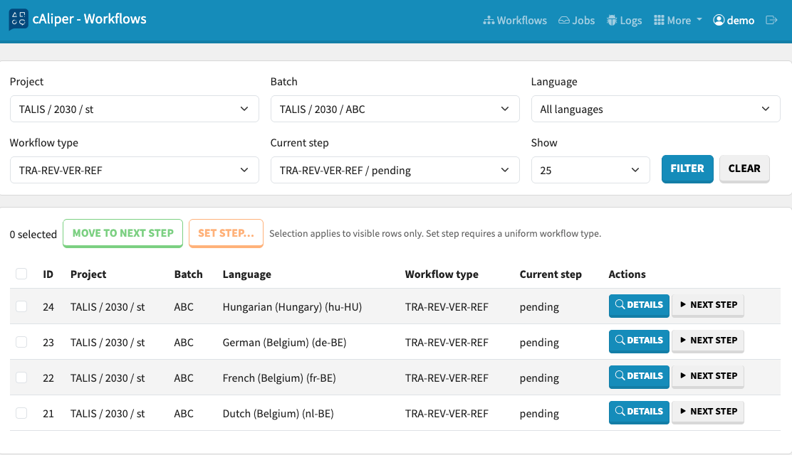
The Workflows view shows the list of workflows and the filter criteria.
Workflow properties¶
Click on Details to open an individual workflow. The upper section of the page shows the constant properties of the workflow such as the program, batch, locale, version and job ID.
The lower part includes the following tabs:
Steps¶
The Steps tab shows the sequence of steps in the workflow and the current step is highlighted (see Monitoring progress below). The buttons Previous step and Next step allow to move the workflow on this page.
Project & Credentials¶
The Project & Credentials tab displays the project URL(s) and the credentials associated with the project(s) that the OmegaT users must use to authenticate. There are different credentials for each step.
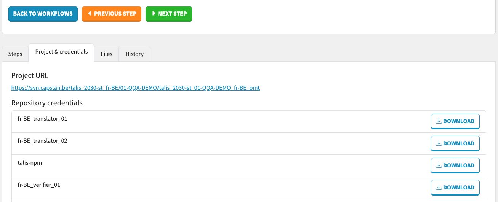
The Project tab shows the project URL and the credentials.
Files¶
The Files tab shows the files included in the batch submitted for translation. You may download the files directly from here if you need to inspect them or share them with other parties who don't have access to the OmegaT project.
History¶
The History tab shows a record or log of the events performed in this workflow: files downloaded, transitions, setup, etc. as well as who triggered them and when.
Diff (versions)¶
When a workflow has more than one language task (e.g. translation and an editing task) and the linguist responsible for the editing task made some changes to the translation, a diff report may be requested comparing those two steps.
Diff reports may be requested to compare any pair of steps in the workflow. All generated diff reports are available under this the Diff tab.
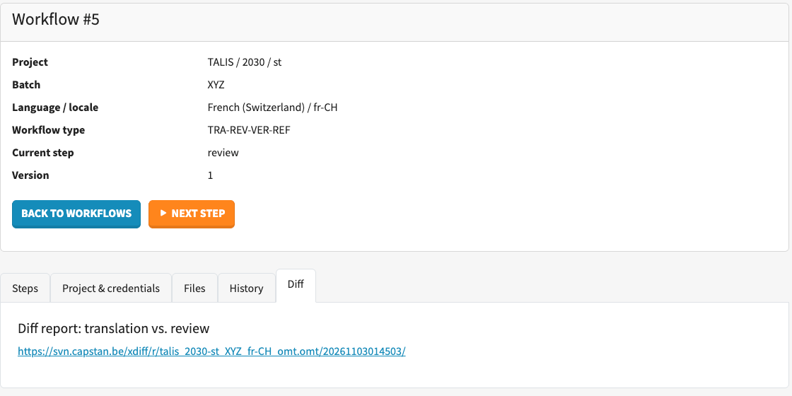
Generated diff reports are available in the Diff tab.
The diff report has a tabular form, including columns for the filename and the segment identifier alongside the source text, the original version and the edited version. This allows the NPM to inspect what changed between the two compared steps without opening the translation project in OmegaT.
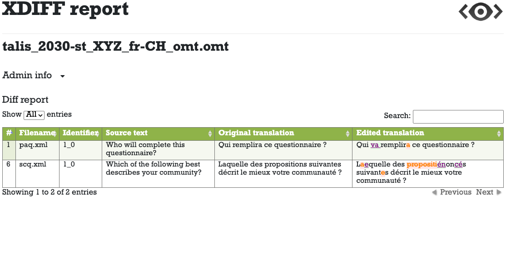
Example of diff report showing changes in two segments.
Monitoring progress¶
The list of workflows provides an overview of the status of all the visible workflows.
In particular, the Current step column indicates where each workflow is in its sequence of pre-defined steps. The step sequence is also displayed in the workflow details, with the current step highlighted.
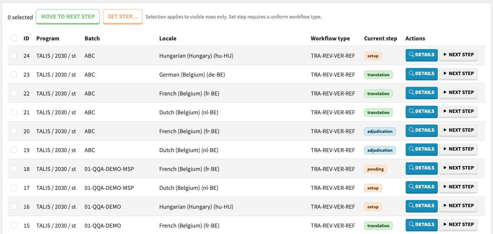
The Current step column shows each workflow's status
Tip
Filter by current step to focus on workflows that are at the same step.
The information about the current step information helps you identify workflows that are waiting for a language task to be finalized, have not yet moved beyond setup, or have reached a later stage. The workflow list is also where you can select workflows for bulk actions.
Click on Details to inspect an individual workflow. In particular, the Steps tab shows the sequence of steps, where the current step is highlighted.
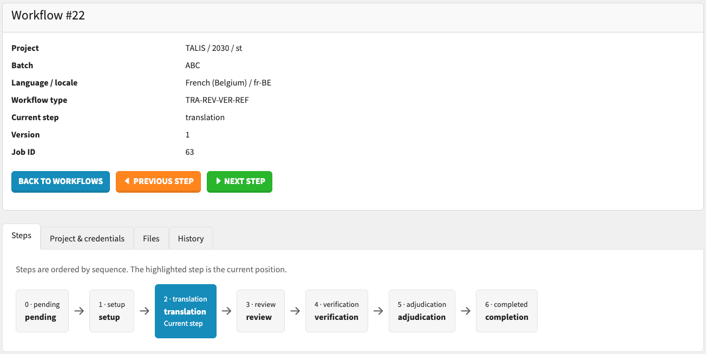
The current step is highlighted in blue.
Actions¶
The Actions column in the list of workflows includes two buttons in each row:
- Details: opens the Workflow page
- Next step: moves the workflow to the next step
The Workflow page displays several buttons:
- Back to workflows: returns to the list of workflows
- Previous steps: moves the workflow to the previous step
- Next step: moves the workflow to the next step
A workflow must go through all its steps to be finalized. For language tasks, the workflow moves forward naturally as linguists finalize the task in OmegaT. However, it's also possible to move a workflow forward or backward manually in cAliper if needed:
- Click on the Next step button (either in the workflow page or the list of workflows) if you do not wish the linguist to finalize the task in OmegaT
- Click on the Previous step button (in the workflow page) if the workflow must be moved backwards and returned to the previous step, e.g. if something is missing, translation is not complete, there's an issue that the user at the previous step must fix in order to continue with subsequent steps, etc.
Workflow initialization¶
After creating a workflow, the current step is INIT (or pending), which means the workflow is on hold and has not started yet. The NPM is responsible for a couple of actions before any language tasks can take place, namely the NPM must:
- Move the workflow to the setup step, so that all OmegaT projects are created and configured accordingly (see Projects).
- After setup is complete, move the workflow to the step after setup, so that the task associated with that step may be performed.
Note
After that point, it's still possible for the NPM to trigger other transitions manually from the workflow manager page (as long as the current step is not "required"), but normally that should only be necessary for tasks that are not performed in OmegaT.
Bulk actions¶
The workflow list supports selecting multiple rows and applying an action to all of them. The selection applies only to the rows currently visible in the list.
The actions available to apply in bulk are the following:
- Move to next step: Moves all the selected workflows to the next step.
- Set step: Moves all the selected workflows to any step in the workflow (not necessarily the next or the previous one). This operation requires the selected workflows to have a uniform workflow type.
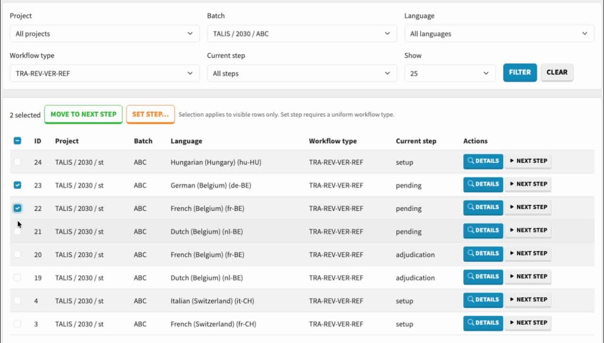
Select the workflows you want to apply the same action to.
Tip
Before applying a bulk action, check the selected rows carefully, including their locales, workflow types and current steps. Do not assume that selecting workflows on one page selects matching workflows on other pages or outside the current filtered view.
Workflow transitions¶
The workflows section of this guide touches briefly on moving workflows forward or backwards. That's what we refer to as a transition (from one step to the next). Typically a transition happens when a workflow moves to the next step. This section discusses transitions in more depth.
Mandatory manual transitions¶
Certain transitions (when the current step is not an OmegaT step) can only be triggered manually, for example:
- From INIT (or
pending) step to setup, to create projects (see Projects) - From setup step to the next step, to launch the first task
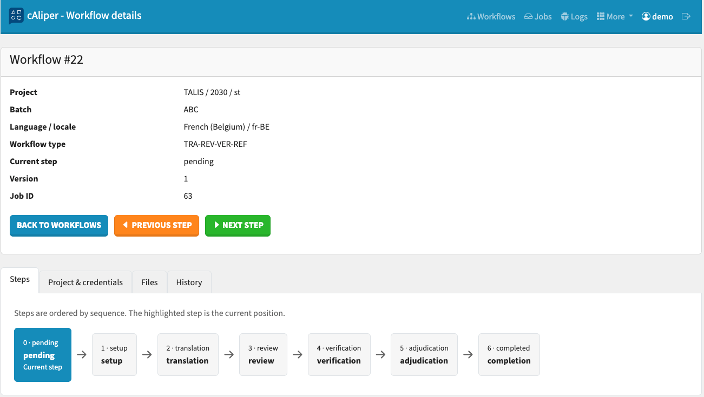
The NPM must move the workflow forward to start language tasks.
Select Next step to move one or more workflows forward. This can be done for one workflow alone or in bulk for several workflows. See the Workflows > Actions section for more details.
Transitions after language tasks¶
For a step configured as a language task performed in OmegaT, the normal way to complete the step is for the assigned user to finalise the task in OmegaT. cAliper then performs the transition to the next step.
When an OmegaT user finalises a task, cAliper:
- Synchronises/saves the translations remotely and commits the target files.
- Marks the previous step as completed and moves the workflow to the next step.
- Revokes the previous user's access rights so that they can no longer modify the translations.
- Grants access rights to the user assigned to the next step, who can then authenticate and download the project.
Example
Suppose a translation step is finalized in OmegaT and the next step is review. Before the task is finalized in OmegaT, the workflow is at translation step and the translator has access to the project but the reviewer does not. When the translator finalizes the task, the workflow moves to review, the translator loses access to the project and the reviewer now has access to the project. The same principle would apply to any other pair of consecutive language tasks.
Other manual transitions¶
Other than letting the workflow move forward when the OmegaT user finalizes task in OmegaT, the NPM can also move a workflow forward manually from the cAliper interface when necessary, provided the current step is not marked as required .
For example, if the task is a review to be performed by a domain expert based on some offline material (a report, exports, a spreadsheet, etc.), who does not work in OmegaT, the domain expert may finalize the task in cAliper (or the NPM may do so on their behalf).
Or for example, if the linguist has some difficulty connecting to cAliper from OmegaT but has confirmed that their task is complete, the NPM may finalize the task in cAliper on their behalf. This should be exceptional, though.
Info
A required step cannot be skipped manually by the NPM. It can be advanced only when the assigned user finalises the task in OmegaT, or when the PA performs the manual transition in the TMS.
On the other hand, besides transitions to and from step, any other tasks that are not OmegaT steps can only be finalized in the workflow manager.
Select Next step to move one or more workflows forward. This can be done for one workflow alone or in bulk for several workflows. See the Workflows > Actions section for more details.
Backward transitions¶
A backward transition is intended for correcting an omission or problem from an earlier step. For example, if something that should have been completed during translation was missed and is discovered during review, the NPM may return the workflow to the previous step (translation) so that the issue can be amended before the next task is performed.
NPM
Use Previous step only when there is a specific reason to return a workflow to an earlier stage. Identify what needs to be corrected and provide instructions for the user responsible for that step. Once the correction is complete, the workflow can proceed through the normal process again.
Completion and handback¶
When the last task is finalised, the workflow gets closed (and, if it was a language task performed in OmegaT, translations and target files are saved in the system, and access rights are revoked from the last user). At that point, unlike in other transitions, cAliper sends a callback to the survey platform to indicate that a new target version of the batch is ready and available for collection.
The survey platform can then collect the target files through the API. This completion and handback process applies to each locale in the job -- a job requested in multiple locales is not fully processed until all locales have been completed.
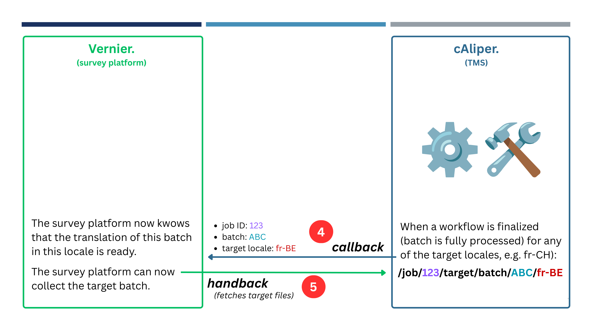
If the job was created by a user upload, the translated batch becomes available for download in cAliper in the Files section of the workflow.
Translation projects¶
Language tasks take place in a translation editor (or, rather, a CAT tool, of which the translation editor is the main component but which includes many other utilities that optimize the task of the linguists, e.g. increasing quality, reducing effort, etc).
Translation projects in cAliper are OmegaT team projects, hosted in a remote repository, to which OmegaT connects to fetch the project and to keep the project synced with the latest changes.
Project setup¶
OmegaT projects are created to accommodate translation and the rest of language tasks, following the translation industry standards in terms of working environment best practices. Depending on the workflow shape, either one or four projects are created per workflow.
Workflow shape
cAliper supports two types of workflows, depending on the workflow's shape: linear (i.e. -----) and Y-shaped (i.e. >----). The difference is that Y-shaped workflows include a double-step composed of two twin translation steps (called "double-translation"), followed by a so-called "reconciliation" step where the two initial translations are merged, whereas linear workflows are based on a single translation.
OmegaT projects are created for a specific batch+locale combination in so-called "linear workflows" and there's one single project per workflow. On the other hand, in Y-shaped workflows, projects are created for a specific batch+locale+step combination, whereby three separate projects are created for the double translation step and for reconciliation, on the one hand, and one forth project is created for the rest of steps, on the other hand.
OmegaT projects are created and configured as expected (depending on the properties selected during the creation of the workflow) when the workflow reaches the setup step (see Workflows > Initialization and Transitions > Mandatory Manual Transitions).
Project details¶
The workflow page has tabs for the different details, one of which shows the Project & Credentials section, which displays the project URL(s) and the credentials associated with the project(s). Credentials are listed individually and can be downloaded using the corresponding Download control.
The Project tab shows the project URL and the credentials.
The NPM must share the project URL and the credentials file with each user so that they can access the project and commit their work in it.
User authentication¶
This section covers only the OmegaT actions that affect workflow coordination. It does not explain how to translate, review or edit content. Users performing language tasks should refer to the separate OmegaT guides for those instructions.
When a workflow reaches an OmegaT step, cAliper grants access to the user assigned to that step. The user must import in OmegaT the credentials provided to them for their step before accessing the repository.
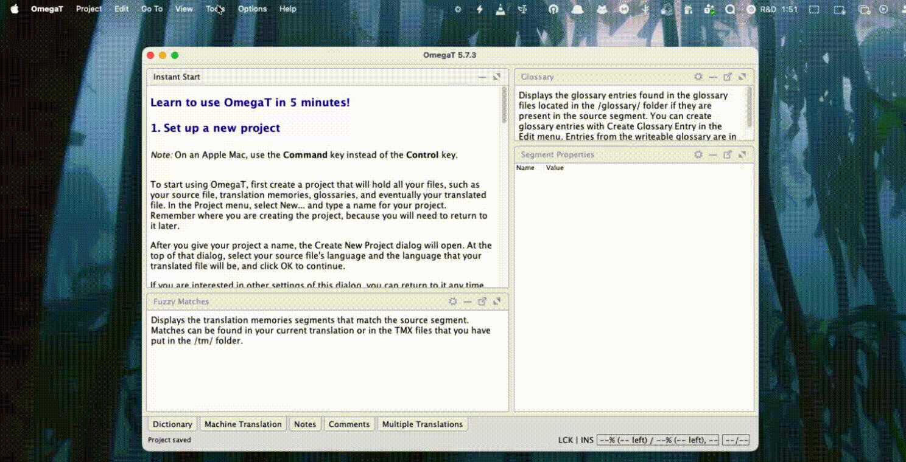
The user imports credentials in Tools > Manage credentials.
NPM
The NPM is responsible for sharing the project URL and the credentials with the correct user(s) assigned to each step.
Project access¶
After importing the credentials, OmegaT can now authenticate to the TMS when the user downloads the team project using Project > Download Team Project. After the project has been downloaded, the user performs the assigned task.
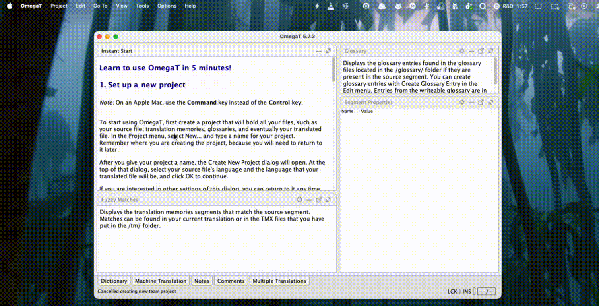
The user downloads the project in Project > Download Team Project.
Info
Only the user assigned to the current step in the workflow can access the project. Users assigned to other steps cannot access the project (anymore or not yet), which prevents collision of tasks. Different users assigned to the same step can, however, access the team project at the same time and team up to accomplish the task.
Finalising a task¶
When the language task is complete, the OmegaT user selects Project > Workflow > Finalize Task.
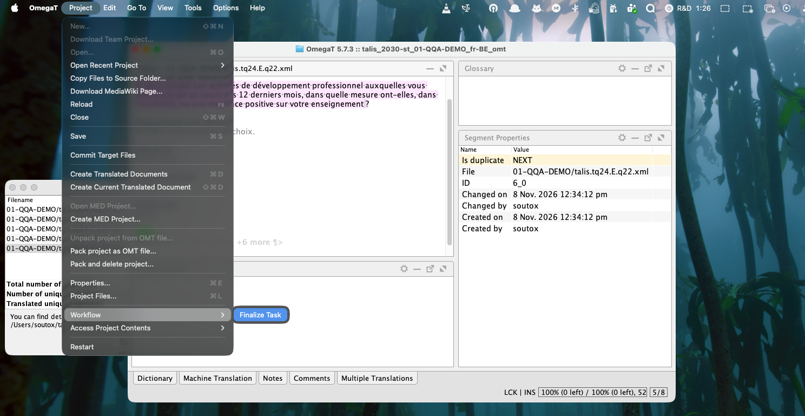
Project > Workflow > Finalize Tasks
The user can enter a comment in the finalisation dialog and then confirm by selecting Finalize.
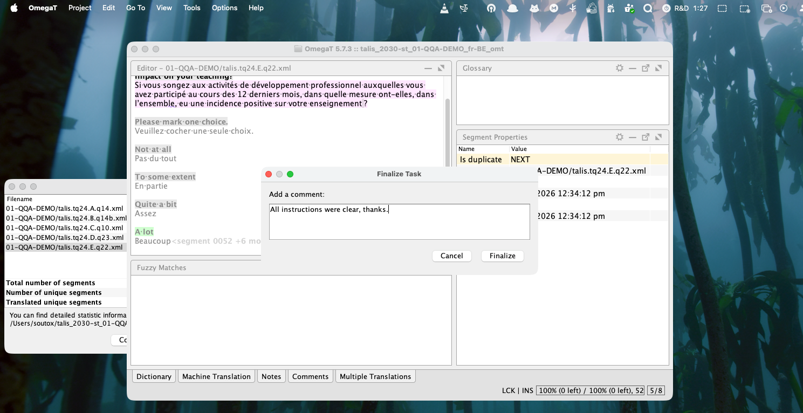
The user may add a comment for the NPM or the next step's user.
OmegaT displays a confirmation when the task has been finalised successfully.
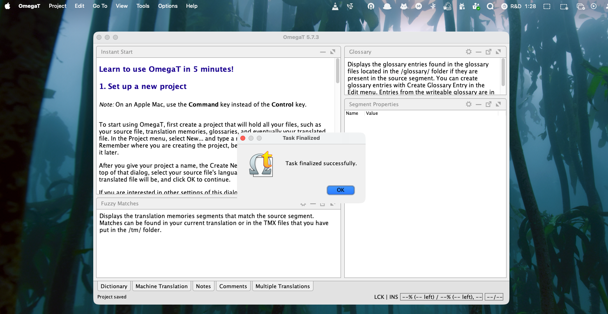
Task finalized successfully.
The successful finalisation triggers the cAliper transition described in Transitions after language tasks. The NPM should verify that the workflow has advanced to the expected next step and that the next user can access the project.
Support¶
cApStAn provides support to both cAliper and OmegaT users through their Helpdesk.
cAliper¶
Should you get stuck while working in cAliper, please register and create a ticket in cApStAn's Helpdesk.
OmegaT¶
Likewise, should an OmegaT user have an issue or a question related to their task in OmegaT or any aspect not covered in the OmegaT guides, they should create a ticket in cApStAn's Helpdesk as the fastest way to get help.